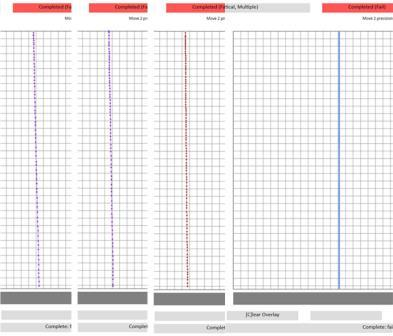
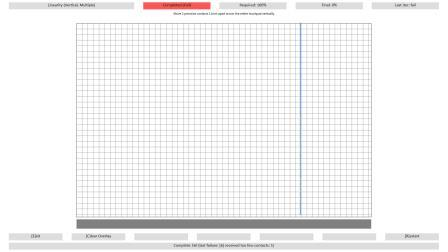
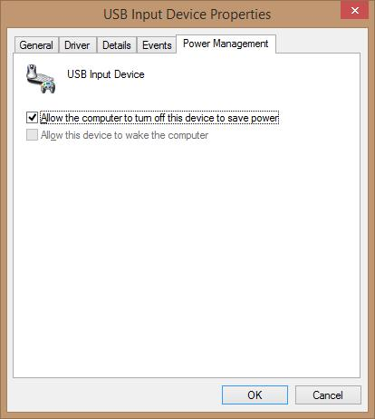

Windows Precision Touchpad Device Validation Guide
This topic provides information about how to validate a Windows Precision Touchpad. It provides guidelines to ensure compliance with the Windows Precision Touchpad Windows Hardware Certification Kit (Windows HCK) testing.
This information applies to Windows 8.1.
Each test that is described in this topic is available through the Windows HCK.
In this topic:
In this section:
General test guidelines
-
Unless otherwise specified, the device should always have AC power when you are performing Windows HCK tests.
-
Unless otherwise specified, all tests should be run with “Test Signing Mode” ON:
-
Open a command prompt that has elevated privileges.
-
Run the following command:
bcdedit –set testsigning on -
Restart the test machine.
-
Open a command prompt that has elevated privileges.
-
Unless otherwise specified, use 7mm diameter contacts for tests that require the use of the PT3 (Precision Touch Testing Tool).
-
Unless otherwise specified, all numbers in error messages that report distance or location are in himetric (0.01mm).
-
The grids in the PTLogo visualization help align vertices (for tests like Linearity), and graph distances. The distance from one line to the next is 200 in himetric, or 2mm.
-
Unless otherwise specified, multiple contacts should maintain a minimum separation distance:
-
If vertically or horizontally aligned, contacts should be at least 11mm apart during test.
-
If diagonally aligned, contacts should be at least 14mm apart during test.
-
If vertically or horizontally aligned, contacts should be at least 11mm apart during test.
-
The path to GetThqaBlob.exe on the Windows HCK controller is C:\Program Files (x86)\Windows Kits\8.1\Hardware Certification Kit\Tests\x86\digitizer\Win8Touch. All necessary files are copied to test machines when the Windows HCK client is installed.
-
Unless otherwise specified, you should disable Selective Suspend to validate USB PTP devices, with exceptions for Static Validation, Edge, Field Firmware Upgradeable (FFU), and Power State Transition tests.
-
For all tests that use the PT3, the PT3 must be axis-aligned to the sensor lines as closely as possible. To do this:
-
Start with the device secured to the table, and turn the table to 0 or 90 degrees, depending on the test’s requirement.
-
Because the touchpad might not be perfectly aligned within the device, start PTLogo and use the visualization to make sure that the contact’s path is completely parallel to the visualization grid lines.
 Note
Note Pressing C in PTLogo will clear the visualization if you start to fill up the screen. If you started PTLogo with the actual test to be run, press R after the sensor is aligned to start at the beginning of the test. -
If there is any drift off axis, use the fine-tune knob to slightly turn the table, as shown in Figure 1 Fine Adjustment for Axis Alignment.
Figure 1 Fine Adjustment for Axis Alignment -
Repeat as needed until there is no observable drift from axis.
-
For example, observe how the path in Figure 2 Visualization Grid Iterations is adjusted over multiple iterations until the contact’s path is parallel to the visualization grid:

Figure 2 Visualization Grid Iterations -
After the path is parallel to the visualization grid lines on one side of the touchpad, run it again on the other side, and make sure it still moves parallel to the grid lines.

Figure 3 Parallel Gridlines
-
Start with the device secured to the table, and turn the table to 0 or 90 degrees, depending on the test’s requirement.
PTLogo interface
-
To manually pass an iteration (where applicable), press P on the keyboard.
-
To manually fail an iteration (where applicable), press F on the keyboard.
-
To manually restart the test (where applicable), press R on the keyboard.
-
To manually fail the test (where applicable), press T on the keyboard.
-
To manually advance to the next iteration (where applicable), press N on the keyboard.
-
To exit PTLogo, press E on the keyboard.
PTLogo command line switches
These switches can be combined and are useful for debugging purposes only. These switches are not permissible for a certification test run.
| Switch | Usage | Purpose |
|---|---|---|
|
-startat # |
Ptlogo.exe –startat # test <testname> .json Where # indicates the specific iteration to start for a given .json test, and <testname> is the name of the .json test. |
Skips to a specific iteration in a given test. |
|
-noDesktop |
Ptlogo.exe –noDesktop test. <testname> .json Where <testname> is the name of the .json test. |
Starts the test on the same input desktop from where it was launched; this is useful for running digiinfo or other debugging tools in the background. |
|
-NoHIDValidation |
Ptlogo.exe –noHidValidation test. <testname> .json Where <testname> is the name of the .json test. |
Disables background HID validation for a specific test. |
|
-alliters |
Ptlogo.exe –alliters test. <testname> .json Where <testname> is the name of the .json test. |
Allows you to go through all iterations of a test even if more than the maximum number of permissible failed iterations have occurred. |
|
-EnableHIDLogging |
Ptlogo.exe –enableHIDLogging test. <testname> .json Where <testname> is the name of the .json test. |
Enables HID logging during a specific test to generate a HID.log file for detailed debugging of failures. |
USB Selective Suspend
All validation should be performed with Selective Suspend DISABLED except for Static Validation, Edge, and Power State Transition tests.
In Device Manager, selective suspend can be toggled by selecting the HID Compliant touchpad device node and then viewing by connection to find its parent (a USB Input Device). Select the parent, view Properties, and then select the Power Management tab to see the screen that is shown in Figure 4 USB Selective Suspend Toggle.
When the box is checked, Selective Suspend is enabled; when the box is unchecked, Selective Suspend is disabled.

Figure 4 USB Selective Suspend Toggle
See Also